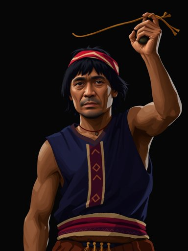
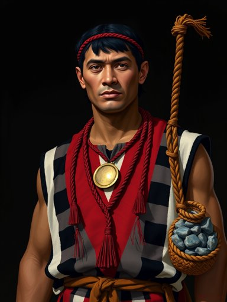

A · Óleo de caballete
Pincelada visible, empaste, bordes sueltos: como una pintura al óleo clásica.


B · Óleo estilizado
Formas simplificadas, contraste fuerte, siluetas claras: tipo ilustraciones de AoE4 o retratos de Total War.



C · Gouache
Más plano y gráfico, colores en zonas, como una ilustración pintada a mano.